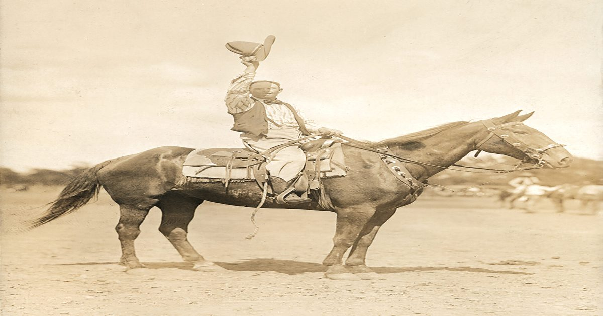

The One and Only ‘Booger’ вошел в число лучших исполнителей родео в истории
Техасец Сэм Приветт, красочно прозванный владельцем «Дикого Запада» Бугера Реда, подкрепил свое хвастовство тем, что он может ездить на чем угодно на четырех ногах.